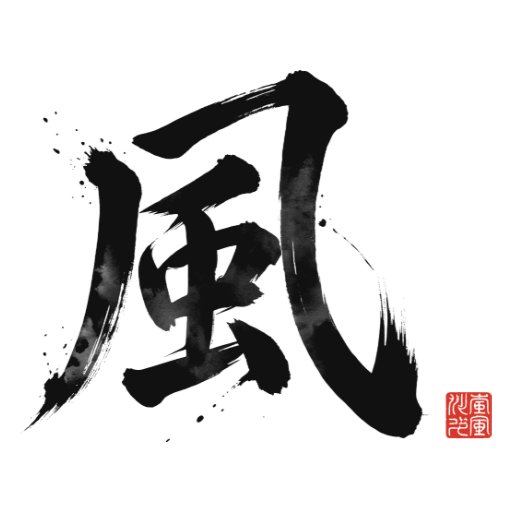
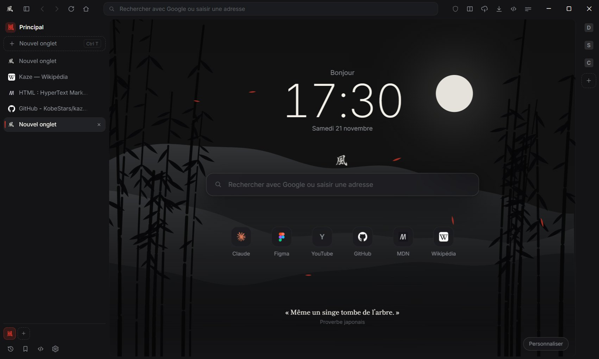
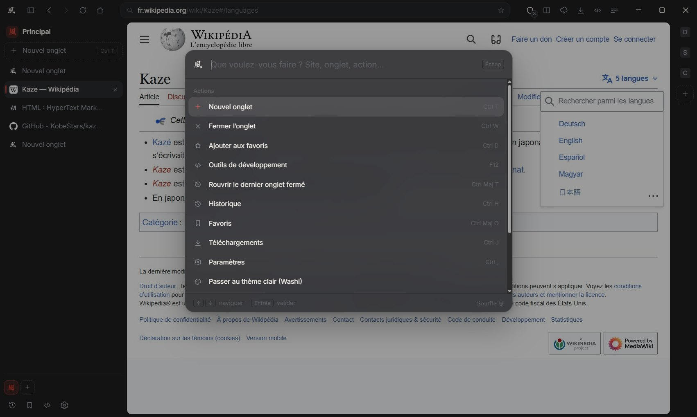
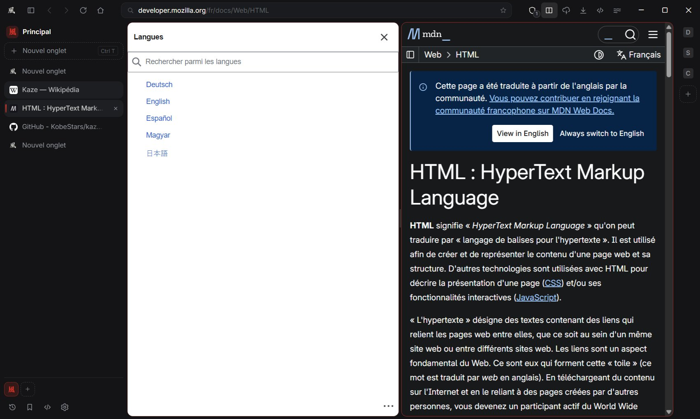
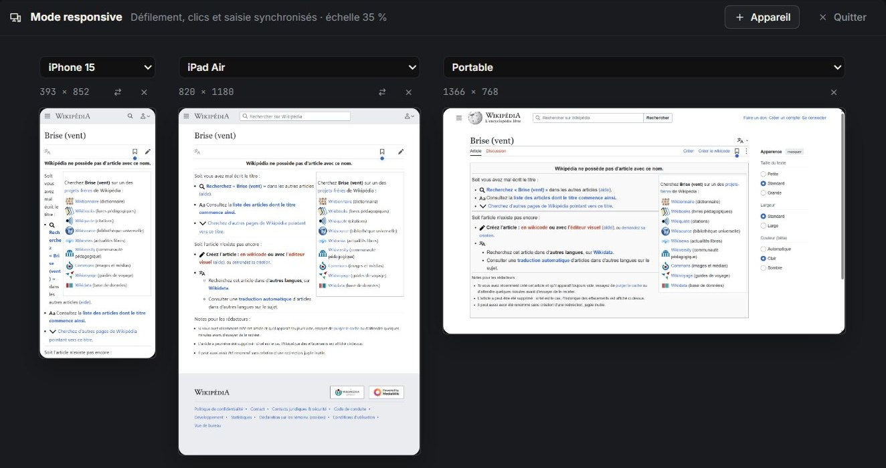
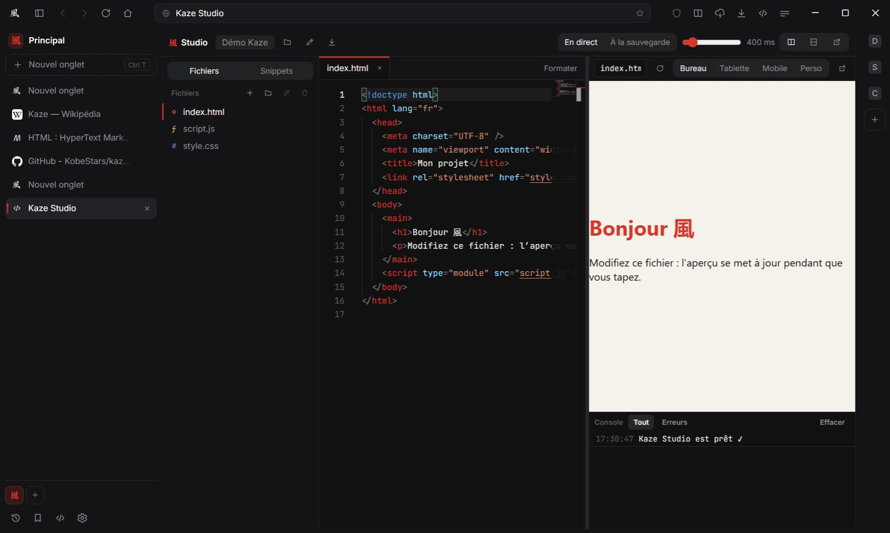
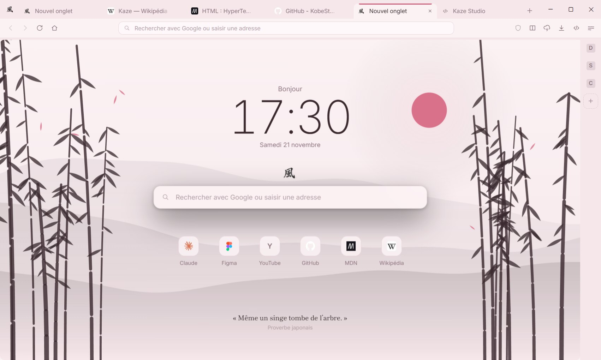

風 KAZE · « VENT » EN JAPONAIS
Navigue comme le vent
Rapide. Élégant. Gratuit. Un navigateur pour Windows pensé pour les développeurs et les créateurs : beau, minimaliste, et fait pour travailler vite au clavier.
- VPN intégré
- Bloqueur de pubs
- Mode responsive
- Éditeur de code
- Extensions Chrome
- Netflix et Spotify

Des fonctions qui portent le nom du vent
Tout ce qu’on attend d’un navigateur, plus des outils pensés pour rester concentré et aller vite.
Souffle
La palette de commandes. Ouvrir un site, retrouver un onglet, chercher dans l’historique ou les favoris, changer de thème ou lancer une Tempête : tout se fait au clavier.
Ctrl + K

Split view
Deux sites côte à côte dans la même fenêtre, avec une séparation réglable. Pratique pour coder avec la documentation sous les yeux.
Ctrl + Maj + S

Mode responsive
Votre site sur un téléphone, une tablette et un ordinateur en même temps, côte à côte. Faites défiler, cliquez ou tapez sur l’un : les autres suivent.
Huit appareils au choix (iPhone, Pixel, Galaxy, iPad, portable, écran Full HD), en portrait ou en paysage, avec l’agent et le tactile du vrai appareil.
Ctrl + Maj + M

Courants
Des espaces de travail avec leurs propres onglets, un nom, une couleur et une icône. Travail, projets, loisirs : chacun son courant.
Bouclier de vent
Bloqueur de publicités et de traqueurs intégré, basé sur les listes EasyList et EasyPrivacy, avec un compteur par page. Désactivable site par site.
Brise
Les onglets inactifs sont mis en veille pour libérer la mémoire, puis rechargés dès que vous y revenez. Ceux qui jouent du son restent éveillés.
Tempête
Le mode focus : les sites qui vous dispersent sont bloqués pendant 15, 25, 50 ou 90 minutes. Même un redémarrage n’y échappe pas.
Panneau latéral
Épinglez vos web apps à droite (Discord, Claude, Notion…) et gardez-les ouvertes pendant que vous naviguez.
Brume
Le VPN intégré, gratuit et sans compte : vos onglets passent par le réseau Tor, avec le pays de sortie au choix. Si Tor décroche, rien ne repart avec votre vraie adresse.
Onglets verticaux
Une barre latérale repliable, ou des onglets en haut, en bas, à gauche ou à droite. Glisser-déposer, clic molette pour fermer.
Extensions Chrome
Collez le lien d’une extension du Chrome Web Store : Kaze l’installe, avec son bouton et sa fenêtre dans la barre d’outils. Dark Reader, outils de développement React…
Netflix et Spotify
Les vidéos et la musique protégées se lisent comme dans Chrome. Et « Ouvrir avec Kaze » sur un fichier .html de votre PC l’ouvre directement dedans.
Un éditeur de code dans le navigateur
Kaze Studio ouvre un dossier ou un fichier local et affiche le site à côté du code, mis à jour pendant que vous tapez. Ctrl + Maj + E pour l’ouvrir.

- Le moteur de VS Code (Monaco) : coloration, autocomplétion, Emmet, multi-curseurs
- Aperçu en direct, et CSS rechargé à chaud sans recharger la page
- Modes mobile, tablette, bureau ou taille perso, avec rotation
- Console intégrée : les erreurs cliquables renvoient à la bonne ligne
- Mini serveur local : chemins relatifs, fetch et modules ES fonctionnent
- « Ouvrir dans Kaze Studio » copie une page web pour l’expérimenter en local
- Formatage Prettier, snippets intégrés et snippets perso
- Export du projet en .zip
À votre image, jusqu’au curseur
Six thèmes prêts à l’emploi, un créateur de thème avec pipette, vos polices (y compris Google Fonts, téléchargées en local), la densité, le flou, les animations et la page d’accueil avec ses widgets déplaçables. Le tout s’exporte en un fichier .kazetheme.

14 templates, un clic chacun
Paramètres → Templates : chaque style change d’un coup les couleurs, les formes, le flou, les polices et ajoute son propre CSS, que vous pouvez retoucher. Un bouton remet votre style d’avant.
Tout ce qui se règle
Paramètres → Apparence, avec un aperçu en direct. Chaque partie se remet à zéro séparément.
Thèmes
Six thèmes, ou le vôtre : neuf couleurs à choisir, pipette comprise. Thème fixe, clair le jour et sombre la nuit aux heures que vous voulez, ou calé sur Windows. Une couleur d’accent par Courant, si vous le souhaitez.
Polices
Une police pour l’interface, une pour les titres, une pour le code : taille, graisse, interligne, espacement, ligatures. Importez vos fichiers ou n’importe quelle Google Font, gardée sur votre PC.
Disposition
Onglets à gauche, à droite, en haut ou en bas. Densité compacte, normale ou aérée, arrondis, flou et transparence de la fenêtre, ombres, barre d’adresse centrée ou classique.
Barre d’outils
Choisissez les boutons affichés et leur ordre par glisser-déposer. Icônes au trait, pleines ou façon pinceau, de la taille qui vous convient.
Page d’accueil
Paysage animé, galerie de 20 fonds originaux (Fuji, aurore, koïs, synthwave…), image du jour, image, vidéo, couleur ou dégradé. Widgets à placer où vous voulez : horloge, météo, raccourcis, notes, citation, tâches. Quatre styles de barre de recherche.
Animations
Trait d’encre, feuilles qui volent, écran de démarrage, indicateur de chargement : chacune s’active à part, avec une vitesse réglable et un mode mouvements réduits.
Sons et curseur
Quatre ambiances sonores discrètes (bambou, cloche, goutte, minimal) avec leur volume. Curseur pinceau, point, celui de Windows ou le vôtre.
CSS et JS par site
Des règles pour retoucher les sites que vous visitez (mode sombre maison, éléments masqués…) et une feuille de style pour l’interface de Kaze elle-même.
Partage
Votre réglage complet tient dans un fichier .kazetheme : exportez-le, envoyez-le, importez celui d’un ami en un clic.
Les mains restent sur le clavier
Les raccourcis habituels de Chrome, plus ceux de Kaze. Tous modifiables dans les paramètres.
| Ctrl + K | Souffle, la palette de commandes |
| Ctrl + T · Ctrl + W | Nouvel onglet · fermer l’onglet |
| Ctrl + Maj + T | Rouvrir le dernier onglet fermé |
| Ctrl + 1 … 9 | Aller directement à un onglet |
| Ctrl + L | Barre d’adresse : une adresse ou une recherche |
| Ctrl + Maj + S | Split view |
| Ctrl + Maj + M | Mode responsive : mobile, tablette et ordinateur |
| Ctrl + Maj + E | Kaze Studio |
| Ctrl + D · Ctrl + H | Ajouter aux favoris · historique |
| Ctrl + B | Replier la barre latérale |
| F12 | Outils de développement |
Vos données restent chez vous
Rien dans le cloud
Favoris, historique, paramètres et onglets sont enregistrés sur votre PC, dans votre dossier utilisateur.
Pages isolées
Chaque site tourne dans un bac à sable, sans aucun accès à Windows ni à vos fichiers.
Permissions demandées
Caméra, micro, position, notifications : Kaze vous demande pour chaque site et retient votre choix.
Toujours à jour
Les nouvelles versions se téléchargent en arrière-plan et s’installent au redémarrage suivant.
Le web, sans résistance
Téléchargez l’installateur depuis la page des versions, lancez-le, et Kaze se met ensuite à jour tout seul.
Télécharger Kaze 0.2.7- Windows 10 ou 11
- 64 bits
- 134 Mo
- Gratuit
Netflix, Spotify et les autres contenus protégés par DRM (Widevine) se lisent dans Kaze depuis la version 0.2.14.